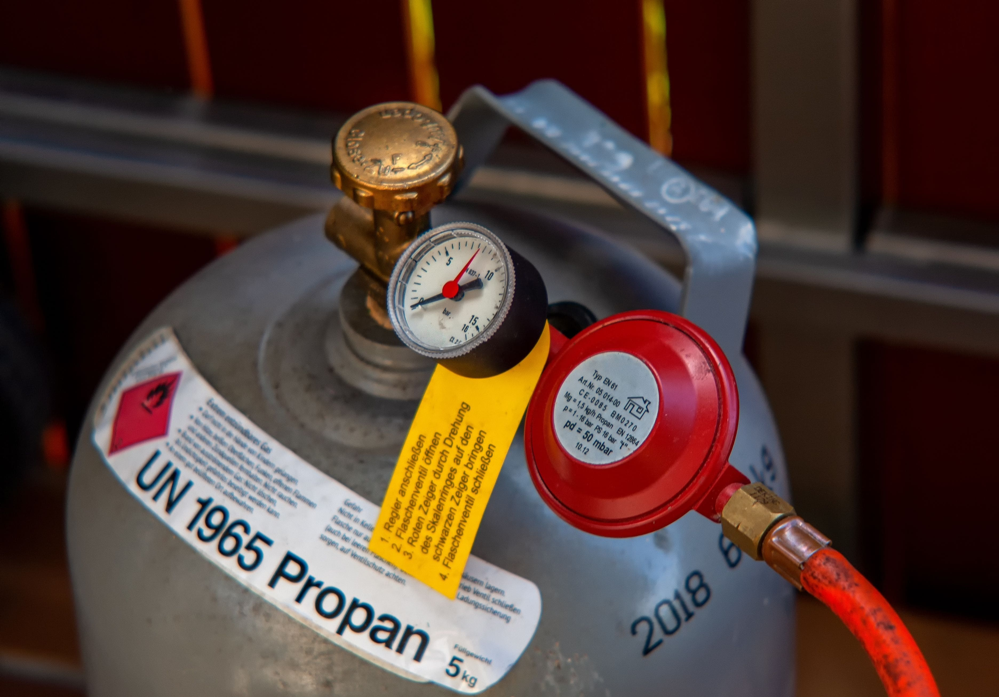
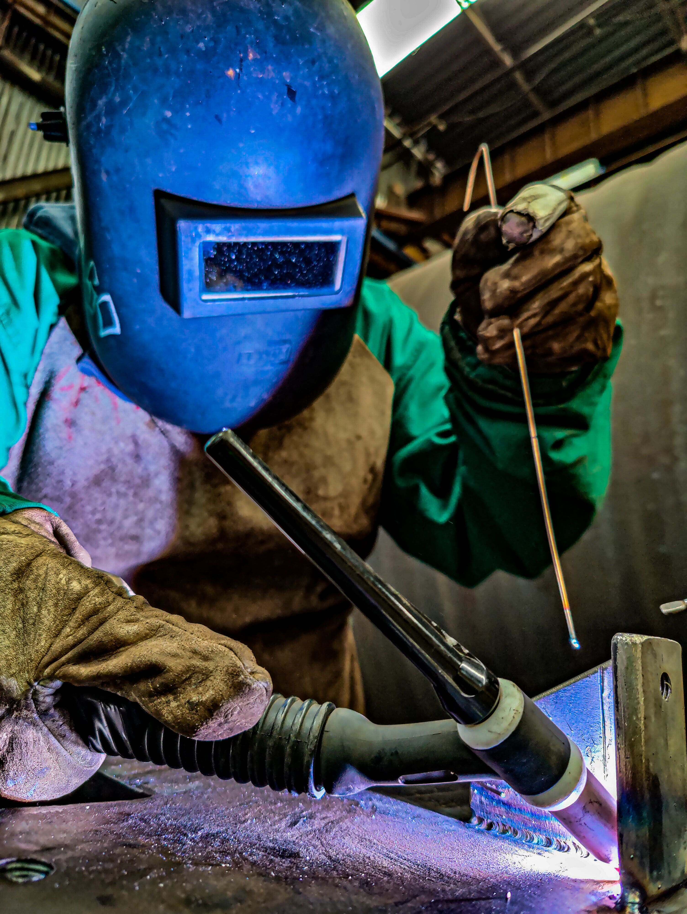

¿Qué es la soldadura?
Proceso de unión permanente de dos o más piezas, normalmente metálicas, mediante calor, presión o ambos, con o sin material de aporte.
Al calentar las piezas hasta fundir los bordes (o hasta un estado plástico), el material de ambas partes se mezcla y, al enfriarse, forma una unión continua. Una soldadura bien hecha debe igualar o superar la resistencia del metal base, por eso es uno de los métodos de unión más importantes de la industria.
¿Cómo funciona?
Para soldar se necesita una fuente de energía que genere calor suficiente (un arco eléctrico, una llama, un láser, la resistencia eléctrica o la fricción). Ese calor funde una pequeña zona llamada baño de fusión. Al enfriarse y solidificarse, las piezas quedan unidas como si fueran una sola. En muchos procesos también se añade un metal de aporte y una protección (gas o fundente) para evitar que el aire contamine la unión.
Elementos de una soldadura
Metal base
Las piezas que se quieren unir (acero, aluminio, acero inoxidable, cobre, etc.).
Metal de aporte
Material que se agrega para rellenar la unión: electrodo, alambre o varilla.
Fuente de calor
Arco eléctrico, llama, láser, resistencia eléctrica o fricción.
Protección
Gas (argón, CO₂) o fundente que aísla el baño fundido del oxígeno y la humedad del aire.
Un poco de historia
- Desde la Edad del Hierro se unían metales calentándolos al rojo y golpeándolos (soldadura por forja).
- A finales del siglo XIX aparece la soldadura por arco eléctrico, que cambió la forma de fabricar estructuras.
- A comienzos del siglo XX se desarrollan la soldadura oxiacetilénica y los electrodos revestidos.
- Durante la Segunda Guerra Mundial se masificó, sobre todo en la construcción de barcos y aviones.
- Hoy se usan procesos automatizados, robots y tecnologías como el láser y la fricción-agitación.
¿Dónde se usa?
Construcción de edificios y puentes, industria automotriz, astilleros y construcción naval, aeroespacial, petróleo y gas (oleoductos y tanques), maquinaria pesada, ferrocarriles, electrónica y reparación y mantenimiento en general.
Clasificación de la soldadura
Se puede clasificar según el principio de unión y según la fuente de energía que se utiliza.
Por el principio de unión
Soldadura por fusión
Se funde el metal base (y el de aporte) y, al enfriarse, forman una sola pieza. Incluye la soldadura por arco, oxigás, plasma, láser y haz de electrones.

Soldadura por presión (estado sólido)
La unión se logra aplicando presión, con poco o ningún calor externo y sin fundir el material. Incluye resistencia, fricción, ultrasonido y explosión.

Soldadura fuerte y blanda
Solo se funde el metal de aporte, que tiene menor temperatura de fusión que el metal base. Se llama brazing por encima de 450 °C y soldering por debajo.

Por la fuente de energía
Arco eléctrico
El calor lo produce un arco entre el electrodo y la pieza. Incluye SMAW, GMAW (MIG/MAG), GTAW (TIG), FCAW y SAW.

Gas / química
El calor viene de una llama o de una reacción química. Incluye la soldadura oxiacetilénica, la oxhídrica y la aluminotérmica.

Resistencia, radiante y mecánica
Usan la resistencia eléctrica, haces de energía o movimiento: puntos y costura, láser, haz de electrones, fricción-agitación y ultrasonido.

Tipos de soldadura
Resumen de los procesos más usados.
| Proceso | Cómo funciona | Usos típicos |
|---|---|---|
| SMAW – Electrodo revestido | Arco entre electrodo revestido y pieza; el revestimiento genera gas y escoria protectores. | Construcción, mantenimiento, trabajo en campo. |
| GMAW – MIG/MAG | Alambre continuo como electrodo y aporte, con gas protector (inerte en MIG, activo en MAG). | Industria automotriz, carrocería, producción en serie. |
| GTAW – TIG | Electrodo de tungsteno no consumible, gas inerte (argón); aporte con varilla aparte. | Aluminio, acero inoxidable, tuberías, trabajos de precisión. |
| FCAW – Alambre tubular | Alambre hueco con fundente interno; con o sin gas externo. | Estructuras gruesas, astilleros, exteriores. |
| SAW – Arco sumergido | Arco oculto bajo una capa de fundente granular. | Tanques, vigas, recipientes a presión. |
| Oxiacetilénica (OFW) | Llama de acetileno y oxígeno que funde el metal; se añade varilla de aporte. | Reparaciones, láminas delgadas, corte y soldadura fuerte. |
| Por resistencia (puntos/costura) | Corriente alta y presión entre electrodos de cobre; el calor sale por la resistencia eléctrica. | Carrocerías, electrodomésticos, láminas. |
| Plasma (PAW) | Arco constreñido que produce un chorro de plasma muy concentrado. | Aeroespacial, alta precisión, corte. |
| Láser (LBW) | Haz láser enfocado que funde con mínima zona afectada. | Electrónica, automotriz, piezas finas. |
| Haz de electrones (EBW) | Electrones acelerados en vacío; penetración profunda. | Aeroespacial, nuclear. |
| Fricción-agitación (FSW) | Herramienta giratoria que plastifica el material sin fundirlo. | Aluminio en aviones, trenes y barcos. |
| Ultrasónica | Vibraciones de alta frecuencia bajo presión. | Electrónica, plásticos, láminas finas. |
| Fuerte y blanda | Metal de aporte fundido que moja las piezas por capilaridad. | Tuberías de cobre, joyería, circuitos electrónicos. |
| Aluminotérmica | Reacción química de aluminio y óxido de hierro que genera metal fundido. | Unión de rieles de ferrocarril. |
Esquemas
Diagramas simplificados de dos procesos de arco.
Instrumentos y equipos
Estos son los elementos básicos que se necesitan para soldar de forma correcta y segura.
Equipo de soldadura
Fuente de poder
Máquina (inversor o transformador) que entrega la corriente eléctrica necesaria para generar el arco. Permite regular el amperaje y el voltaje según el material y el espesor.

Portaelectrodo y pinza de tierra
El portaelectrodo sujeta el electrodo y la pinza de tierra se conecta a la pieza para cerrar el circuito eléctrico.

Antorcha o pistola
Conduce el alambre, el gas protector y la corriente en los procesos MIG y TIG.

Cilindros y reguladores
Almacenan gases como argón, CO₂, oxígeno o acetileno, y los reguladores controlan el caudal y la presión.

Protección y acabado
Careta, guantes y delantal
Protección personal frente a la radiación del arco, las chispas, las salpicaduras y el calor.
Herramientas de acabado
Piqueta para quitar la escoria, cepillo de alambre, amoladora, mesa de trabajo y prensas de sujeción.

Ventajas y desventajas
La soldadura es muy útil en la industria, pero también tiene riesgos y limitaciones que hay que conocer.
Ventajas
Unión permanente y resistente
Bien hecha, la unión iguala o supera la resistencia del metal base.
Ahorro de peso y material
No necesita remaches, tornillos ni piezas extra, lo que reduce el peso y el costo de la estructura.
Formas complejas y reparaciones
Permite construir piezas de formas variadas y reparar piezas rotas o desgastadas.
Automatización
Muchos procesos se pueden automatizar con robots, lo que aumenta la producción y la repetibilidad.
Uniones herméticas
Las uniones quedan selladas, algo clave en tanques, tuberías y recipientes a presión.
Equipos portátiles
Se puede soldar en campo, en obra o en lugares de difícil acceso.
Desventajas
Riesgos para la salud
Quemaduras, humos tóxicos y radiación del arco si no se usa la protección adecuada.
Distorsiones y tensiones residuales
El calor puede deformar las piezas y dejar tensiones internas al enfriarse.
Mano de obra calificada
La calidad depende de la habilidad de quien suelda y de seguir bien el procedimiento.
Uniones difíciles de desarmar
Al ser permanente, no se puede desmontar sin cortar o dañar las piezas.
Defectos internos posibles
Pueden aparecer porosidad, grietas o falta de fusión, que a veces solo se detectan con ensayos.
Zona afectada por el calor
El metal cercano a la soldadura puede perder resistencia o cambiar sus propiedades.
Consideraciones de seguridad
Soldar implica riesgos de quemaduras, descargas eléctricas, humos y radiación. Estas medidas ayudan a prevenirlos.
Protección personal (EPP)
Careta con filtro adecuado
Protege los ojos y la cara de la radiación del arco y de las chispas. El filtro debe tener la sombra correcta para el proceso.

Guantes, chaqueta y delantal
De cuero o material resistente al calor, para evitar quemaduras por salpicaduras y chispas.

Botas de seguridad y gafas
Las botas protegen de caídas de piezas y del calor. Las gafas se usan debajo de la careta.

Protección auditiva y respiratoria
Tapones u orejeras en trabajos ruidosos, y mascarilla o respirador cuando hay humos.

Zona de trabajo
Buena ventilación
Se debe contar con ventilación o extracción de humos para no respirar gases tóxicos.

Sin material inflamable
Hay que retirar del área líquidos, papeles, telas y cualquier material que pueda incendiarse.

Extintor cercano
Debe estar a la mano, revisado y ser adecuado para el tipo de fuego posible.

Biombos de protección
Evitan que el destello del arco lastime a las personas que están cerca.

Principales peligros
Radiación UV/IR
Puede causar daño ocular y quemaduras en la piel, incluso por exposiciones cortas.

Descarga eléctrica
Se previene con cables en buen estado, buena conexión a tierra y manos y ropa secas.

Humos y gases tóxicos
Al fundir el metal y los recubrimientos se liberan partículas y gases dañinos para los pulmones.

Incendio, explosión y quemaduras
Las chispas y el metal caliente pueden provocar fuego o lesiones si no se controla el entorno.

Manejo de cilindros de gas
Posición vertical y asegurados
Se sujetan con cadena o soporte para que no se caigan.

Mangueras y reguladores en buen estado
Hay que revisarlos antes de usar para detectar fugas o daños.

Sin aceite ni grasa con oxígeno
El oxígeno en contacto con aceite o grasa puede provocar combustión violenta.

Lejos de fuentes de calor
Los cilindros no deben estar cerca de llamas, chispas ni de la luz directa del sol por mucho tiempo.

Vídeos recomendados
Vídeos para ver cada proceso en acción, sin salir de la página.